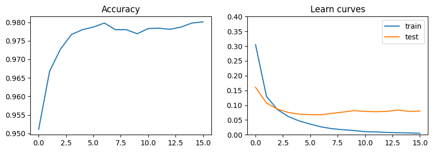
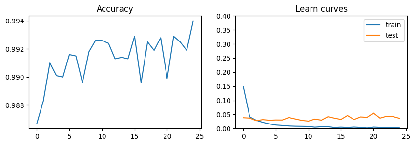

from tqdm import tqdm
import pandas as pd
import torch
from torch import nn
from torch import optim
from torch.utils.data import DataLoader
from torchvision import transforms
from torchvision.datasets import MNIST
from IPython.display import clear_output
import matplotlib.pyplot as pltMNIST
A popular dataframe for first steps and experiments in computer vision. So here are my solutions for MNIST using torch.
Downloading data
There is a special module in Torch that allows you to download the MNIST dataset to your computer.
data_train = MNIST(
"mnist_files",
train = True,
download = True,
transform = transforms.ToTensor()
)
data_valid = MNIST(
"mnist_files",
train = False,
download = True,
transform = transforms.ToTensor()
)train_loader = DataLoader(data_train, batch_size = 64, shuffle = True)
valid_loader = DataLoader(data_valid, batch_size = 64, shuffle = True)Data description
Input features is a matrix describing images with dimensions (n_channels, picture_width, picture_height).
data_train[0][0].shapetorch.Size([1, 28, 28])Target is an integer that indicates which number will be displayed on the image.
data_train[0][1]5Basic network
Definition and usage
Here is a model that implements a transformation that takes tesnsor describing picture and returns model 10 numbers.
basic_network = nn.Sequential(
nn.Flatten(),
nn.Linear(28*28, 256),
nn.ReLU(),
nn.Linear(256, 10)
)
basic_network(data_train[0][0]).tolist()[[-0.22059409320354462,
-0.1914120316505432,
0.007970903068780899,
-0.05525556206703186,
-0.05393986031413078,
0.0036779269576072693,
0.051963288336992264,
0.03920704871416092,
0.06251650303602219,
-0.1357821673154831]]We understand the intex of the maximum value as the predicted class. To extract it from the model result, you need to use code like in the cell below.
pred_number, pred_class = torch.max(basic_network(data_train[0][0]), 1)
print("predicted number", pred_number.item())
print("predicted class", pred_class.item())predicted number 0.06251650303602219
predicted class 8Or the same code applied to the whole batch.
X, y = next(iter(train_loader))
values, classes = torch.max(basic_network(X), 1)
pd.DataFrame({
"values" : values.tolist(),
"classes" : classes.tolist()
}).head()| values | classes | |
|---|---|---|
| 0 | 0.109403 | 6 |
| 1 | 0.158294 | 6 |
| 2 | 0.126944 | 6 |
| 3 | 0.137046 | 8 |
| 4 | 0.135719 | 8 |
Optimization
Below is the function that implements the model training epoch.
def epoch(
model: nn.Module,
data_loader: DataLoader,
optimizer: optim.Optimizer,
loss_fn
):
model.train()
loss_values = []
for x, y in tqdm(data_loader, desc = "train"):
optimizer.zero_grad()
output = model(x)
loss_val = loss_fn(output, y)
loss_values.append(loss_val.item())
loss_val.backward()
optimizer.step()
return sum(loss_values)/len(loss_values)Evaluation
Here is a function that allows you to estimate the loss and accuracy of the model for test data.
optimizer = optim.Adam(basic_network.parameters(), lr = 1e-3)
loss_fn = nn.CrossEntropyLoss()
@torch.inference_mode()
def evaluate(
model: nn.Module,
data_loader: DataLoader,
loss_fn
):
loss_values = []
model.eval()
total = 0
correct = 0
for x, y in tqdm(data_loader, desc = "evaluation"):
output = model(x)
loss_val = loss_fn(output, y)
loss_values.append(loss_val.item())
_, classes = torch.max(model(x), 1)
total += len(x)
correct += (classes == y).sum().item()
return sum(loss_values)/len(loss_values), correct/totalFitting
Here is a cycle that runs a few epochs of network load.
train_scores, test_scores, accuracies = [], [], []
for i in range(100):
train_scores.append(epoch(
model = basic_network,
data_loader = train_loader,
optimizer = optimizer,
loss_fn = loss_fn
))
test_score, accuracy = evaluate(
model = basic_network,
data_loader = valid_loader,
loss_fn = loss_fn
)
test_scores.append(test_score)
accuracies.append(accuracy)
clear_output()
if accuracy > 0.98:
breakVisualise the progress of the model in the plots below.
plt.figure(figsize = [10, 3])
plt.subplot(121)
plt.title("Accuracy")
plt.plot(range(len(accuracies)), accuracies)
plt.subplot(122)
plt.title("Learn curves")
plt.plot(range(len(train_scores)), train_scores)
plt.plot(range(len(test_scores)), test_scores)
plt.legend(["train", "test"])
plt.ylim(0,0.4)
plt.show()
Сonvolutional neural network
You may think that result of the previous model is pretty good, but you can imporove it iven more using convolutinal layers.
In the next cell, we’ve just defined the model that we’re going to fit.
cnn = nn.Sequential(
nn.Conv2d(in_channels = 1, out_channels = 32, kernel_size = 5),
nn.ReLU(),
nn.MaxPool2d(kernel_size = 2),
nn.Conv2d(in_channels = 32, out_channels = 64, kernel_size = 5),
nn.ReLU(),
nn.MaxPool2d(kernel_size = 2),
nn.Flatten(),
nn.Linear(4*4*64, 256),
nn.ReLU(),
nn.Linear(256, 10)
)We can use the same methods for fitting as for the basic model.
Note Don’t forget to pass the weights of the new model to the optimiser, otherwise it will continue to work with the weights of the base model.
optimizer = optim.Adam(cnn.parameters(), lr = 1e-3)
train_scores, test_scores, accuracies = [], [], []
for i in range(100):
train_scores.append(epoch(
model = cnn,
data_loader = train_loader,
optimizer = optimizer,
loss_fn = loss_fn
))
test_score, accuracy = evaluate(
model = cnn,
data_loader = valid_loader,
loss_fn = loss_fn
)
test_scores.append(test_score)
accuracies.append(accuracy)
clear_output()
if accuracy > 0.993:
breakAnd visualising of the results:
plt.figure(figsize = [10, 3])
plt.subplot(121)
plt.title("Accuracy")
plt.plot(range(len(accuracies)), accuracies)
plt.subplot(122)
plt.title("Learn curves")
plt.plot(range(len(train_scores)), train_scores)
plt.plot(range(len(test_scores)), test_scores)
plt.legend(["train", "test"])
plt.ylim(0,0.4)
plt.show()